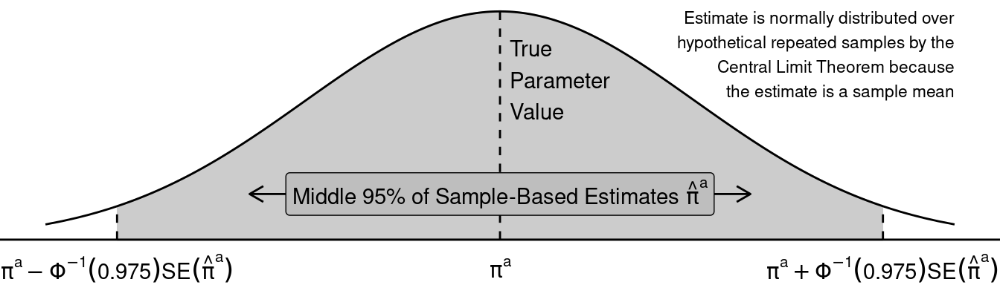

Discussion 4. Interference and Stat Review
Interference
You can download the slides for this week’s discussion.
Stat review reminder
- \(\pi^a= P(Y^a=1)\)) under treatment condition \(a\)
- Let \(\hat\pi^a\) be the estimate of that unknown probability
- \(\hat\pi^a = \frac{1}{n_a}\sum_{i:A_i=a} Y_i^a\), proportion of people in that treatment condition to have outcome 1
- To make a confidence interval on \(\hat\pi^a\) we need the standard error of \(\hat\pi^a\)
Standard error
- Let \(Y^a\) be a Bernoulli random variable
- The variance of \(Y^a\) is \(V(Y^a) = \pi^a (1-\pi^a)\)
- We have estimated by an average: \(\hat\pi^a\)
- If we did this many times in many hypothetical samples, we would get different estimate
- The estimates sampling variance is \(V(\hat\pi^a) = \frac{\pi^a(1-\pi^a)}{n_a}\)
- The standard error is the square root of the sampling variance: \[SE(\hat\pi^a) = \sqrt\frac{\pi^a(1-\pi^a)}{n_a}\]
- We can estimate this SE by plugging in our estimate \(\hat\pi^a\)
- In R: we translated the standard error formula into code
Sampling distribution
- \(\hat\pi^a\) is a sample mean
- By the Central Limit Theorem: as \(n \to \infty\), across hypothetical repeated samples the distribution of \(\hat\pi^a\) estimates becomes Normal
- Across repeated samples, the middle 95% of estimates will fall within a known range: \[\pi^a \pm \Phi^{-1}(.975) \times SE(\hat\pi^a)\]
- where \(\Phi^{-1}()\) is the quantile of the standard Normal distribution
- \(\Phi^{-1}(.975) \approx 1.96\), so the number 1.96 might be familiar to you

- Plug in the estimates \(\hat\pi^a\) and \(\widehat{SE}(\hat\pi^a)\) to get a 95% confidence interval
- The CI is centered on the estimate \(\hat\pi^a\)
- If we repeatedly made a CI using hypothetical samples from the population, the CI would contain the unknown true parameter \(\pi^a\) 95% of the time
- In R: we translated the confidence interval formula into code